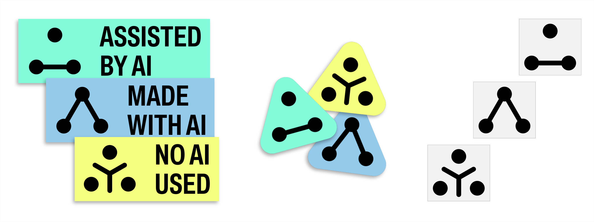

AI label
Dans un monde submergé par des artefacts produits par IA, il peut-être nécessaire de pouvoir labéliser les œuvres afin de préciser l'origine du contenu consulté. En effet, pour des raisons de transparence et d'éthique, savoir comment et à quel degré l'IA a été utilisée, permet d'éviter toute confusion ou malentendu sur la paternité d'un projet. Cet outil de signalisation permet de reprendre un certain contrôle sur les œuvres étiquettées, que ce soit pour promouvoir ou critiquer l'utilisation de l'IA.
Les étiquettes ont été conçues en ce sens avec trois symboles sous licence CC 0, c’est à dire dans le domaine public, que vous pouvez télécharger et utiliser comme vous voudrez.

La première étiquette, NO AI USED (l'IA n'a pas été utilisée), représente trois cercles disposés sur les sommets d'un triangle invisible. Trois segments partent des côtés pour rejoindre le centre du triangle formant la lettre y. Le symbole peut être traduit graphiquement par trois silhouettes de personnes (le cercle représentant la tête et le y le corps) ou trois humains vus de dessus et travaillant en collaboration autour d'une table ou d'un atelier.
La deuxième étiquette, ASSISTED BY AI (L'IA a été utilisée comme assistance), représente les trois cercles du logo précédent. À la place du Y, les deux cercles du bas du triangle sont reliés, formant une base. Ce lien représente le socle, l'aide sur laquelle l’humain va se reposer pour créer son projet. Le cercle au-dessus de cette base représente l’œuvre en cours de construction.

La dernière étiquette, MADE WITH AI, reprend une nouvelle fois la disposition des cercles en triangle. Deux segments joignent cette fois-ci les deux côtés de celui-ci, créant la forme du A pour « Artificiel ». Ici, le symbole triangulaire se démarque, rappelant le panneau signalétique « attention », soulignant ainsi que l'œuvre a été générée par IA.
Ce système de classification doit être mis à l'épreuve dans son utilisation et peut contenir des biais qu’il faut souligner afin de garantir l'efficacité dudit système. Son utilisation doit être accompagnée d'un regard entraîné le plus objectif possible, en essayant de ne pas s'enfermer dans des apprioris.